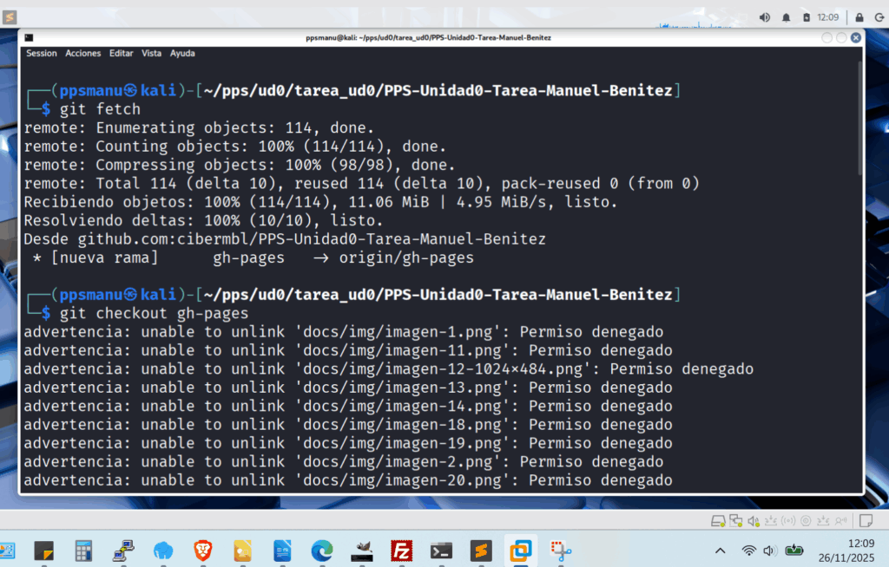
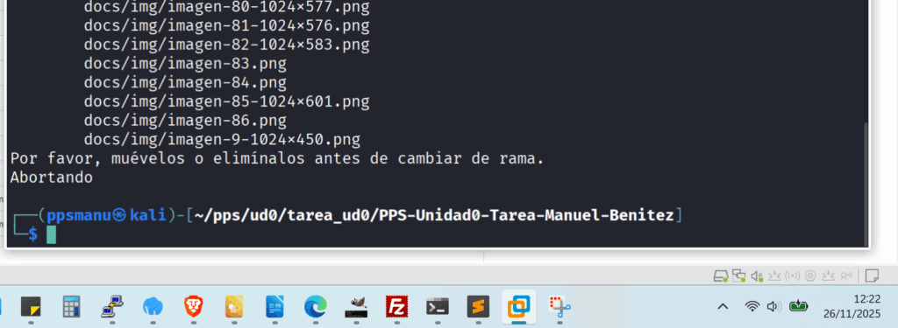
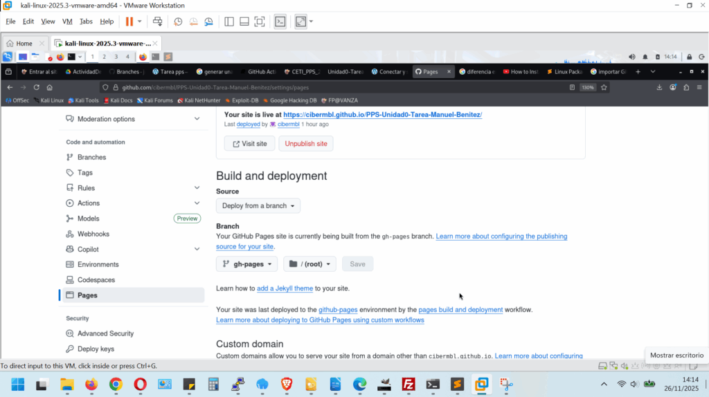
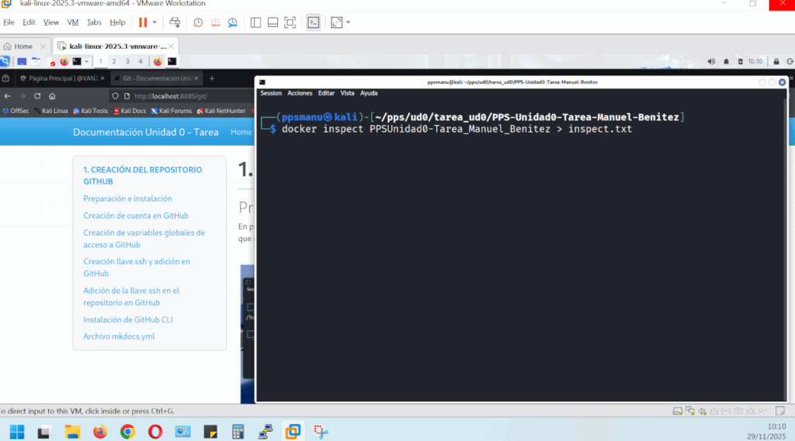

4. CREACIÓN DE UN CONTENEDOR DE SERVICIOS NGINX CON DOCKER
Introducción
La idea es crear un contenedor servicios web con NGINX que para que sirva para publicar documentación que se ha generado previamente en github.io con gitActions y gitPages. Esto nos servirá para poner en practica los conocimientos en Docker.
Si echamos un vistazo a la rama gh-pages de nuestro repositorio -> https://github.com/cibermbl/PPS-Unidad0-Tarea-Manuel-Benitez.git podemos observar como vemos la estructura archivos de la web estática que sirve para la documentación en GitHub pages:

Mediante Bind Mount en docker podemos persistir los datos de la rama gh-pages de Github, de una manera solvente. Veamos:
En primer lugar vamos a pasar a la rama gh-pages mediante:
git checkout gh-pages

Que no cunda el pánico, el error que vemos, es debido a que por defecto, Github clona la rama main, y por lo tanto no tenemos en local la rama gh-pages, por lo tanto procedemos a clonarla,
git fetch
git checkout gh-pages

Observamos que no tenemos permiso para las rutas de las imágenes, y es por que al cambiar a ramas gh-pages, el directorio /doc/img con las imágenes no existe, aún así al final nos indica de que si ha cambiado de rama satisfactoriamente:

Para arreglar estos permisos, hacemos:
sudo chown -R $USER:$USER docs/
<div></div>
# Vuelvo a cambiar de rama para comprobar que no hay errores
<div></div>
git checkout main

Aún me indica que aún hay archivos modificados o pendientes y Git aún no permite cambiar de rama, para no perderlos, para arreglar esto hacemos:
# Para ver que archivos están aún pendientes
git status

Esto significa que tu carpeta docs/ existe pero no forma parte de la rama gh-pages.
Para arreglar esto, sin perder el directorio docs/ en main, tenemos que añadir el directorio docs/ y hacer un commit:
git add docs/
git commit -m "Añadiendo directorio docs"
Volvemos a la rama gh-pages,
git checkout gh-pages
y comprobamos que ya está en la rama correcta:
* gh-pages
main
y hacemos un push de la rama:
git push origin gh-pages

Una vez que se ha subido correctmante la rama gh-pages, comprobamos lo siguiente:
En el repositorio de Github -> Settings/pages chequeamos en Build and deployment, en el desplegable Source seleccionamos Deploy from a branch y seleccionamos la rama gh-pages y en Folder debe de estar habilitado (porque ya lo habilité en apartados anteriores), el directorio / (root):

A continuación compruebo que el directorio contiene la web estática con contenido, HTML, CSS, JS, imágenes, etc:
ls -l

A continuacíon creo el contenedor NGINX con bind mount:
docker run --name PPSUnidad0-Tarea_Manuel_Benitez \
-p 8085:80 \
-v $(pwd):/usr/share/nginx/html \
-d nginx
nombre del contenedor: PPSUnidad0-Tarea_Manuel_Benitez
puerto: 8085
Bind mount monta el directorio de la web
Y a continuación compruebo que el contenedor está corriendo:
docker ps
1. CAPTURA Creación de la máquina (contenedor)

A continuación vamos a comprobar que dicha web estática ya está cargando a través del puerto 8085 en local.
En el navegador de la máquina kali, cargo la siguiente url -> http://localhost:8085
2. CAPTURA Contenedor NGINX en marcha y mostrando la web de GitHub pages en localhost.

A continuo procedo a la creación del archivo docker inspect, que nos mostrará información detallada del contenedor creado.
docker inspect PPSUnidad0-Tarea_Manuel_Benitez > inspect.txt
3. CAPTURAS del archivo -> inspect.txt



Adjunto archivo inspect.txt, en el archivo comprimido de la entrega de la tarea.